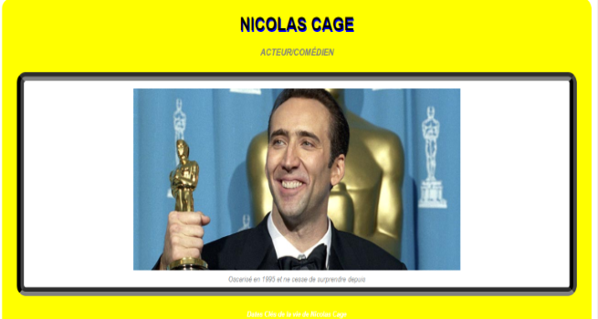
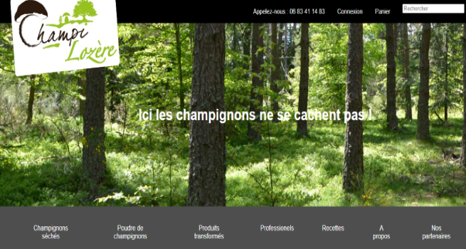
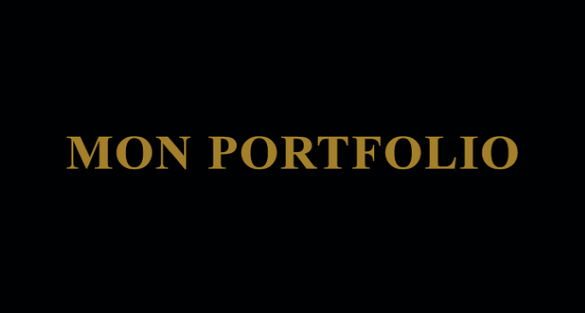
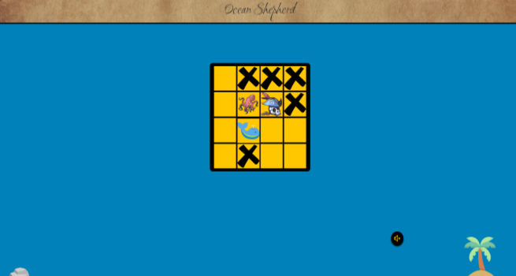

ErhanERUNSAL
DEVELOPPEUR WEB WEB MOBILE
"Passionné par la réalisation et le développement de projets web, j’ ai tout naturellement intégré la formation Développeur Web/ Web Mobile du Greta de Mende. Fort de mon engouement pour ce domaine, je m’investis énormement, et je prends grand plaisir à exercer. Cet intérêt se reflète largement dans la qualité de mes rendus. À la recherche d’un stage je souhaite intégrer une entreprise dynamique en tant que stagiaire développeur web"
Diplômé du BTS NDRC, j’ai pu réaliser au cours de mes études divers stages, notamment un stage de 2 mois à la Société Générale Marvejols où je me suis occupé de l’accueil de la clientèle en 2017, aussi en 2019 j’ai réalisé un stage de 2 mois à Point.P Mende où j’ai effectué le contrôle informatique de l’inventaire des produits en rayon, j’ai aussi réalisé dans ce cadre un jeux concours en agence pour fidéliser la clientèle. Enfin en 2020, j’ai été en stage pendant 2 mois à Champi-Lozère, je me suis occupé de la partie back-end du site internet de l’entreprise
Mes Expériences
Mes Compétences
Afin de pouvoir développer des sites internet fonctionnels et efficaces,
j’ai acquis les capacités suivantes : les techniques de conception et de modélisation des sites internet, les langages de développement ; CSS, JS, HTML, PHP, l’environnement informatique et les normes en vigueur et les outils de développement ; WORDPRESS, BOOTSTRAP
Durant ma formation j’ai réalisé plusieurs veilles car le métier de développeur est en constante évolution, de nouvelles technologies et mise à jour apparaissent sans cesse. Autant de raisons pour un développeur web d’effectuer une veille efficace et complète. J’ai aussi eu la possibilté de créer plusieurs travaux comme ci-dessous, veuillez cliquer sur le bouton GITHUB pour les apercevoir complètement
Mes Travaux

Time-Line de Nicolas CAGE (HTML+CSS+FIGMA)

Site internet de Champi-Lozère (HTML+CSS+WIREFRAME CC)

MON PORTFOLIO (HTML+CSS+FIGMA)

JEUX EN JAVASCRIPT(HTML+CSS+JS+FIGMA)

SITE GRETA/GARD-LOZERE(HTML+CSS+WORDPRESS)
Mes Loisirs
J'apprécie de passer du temps avec mes parents en jardinant, c'est une activité qui m'apaise et me permet de me rapprocher de la nature. J'aime également découvrir de nouvelles saveurs en allant au restaurant avec mes amis. Pour me divertir, je joue souvent au basketball et aux jeux-vidéos avec mes petits-frères, et nous aimons aussi lire des mangas. Enfin, j'aime regarder des matchs de basketball et des films, notamment ceux mettant en vedette mon joueur de basketball, Derrick Rose et mon acteur préféré, et Nicolas Cage